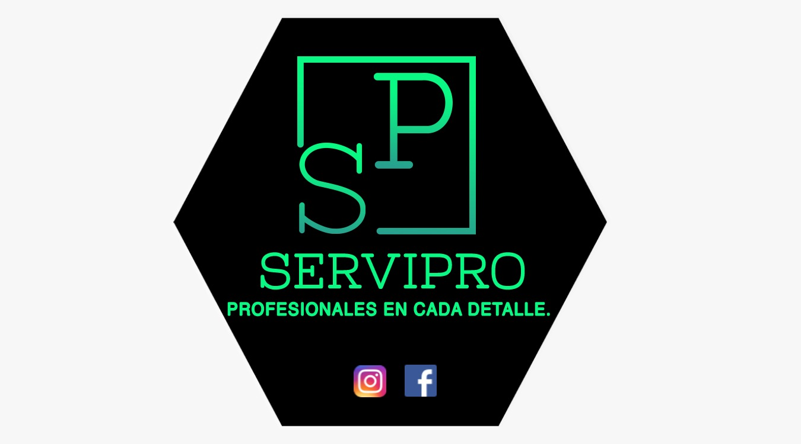

Proyectos destacados
Library Manager
Aplicación de escritorio para un sistema bibliotecario, con funcionalidades como registro, busqueda, eliminación y diferentes gestiones de recursos. Desarrollado con C#, MySQL y ASP.NET Framework.
Ver en GitHub
NovaBank
Aplicación de escritorio bancario con funcionalidades como transacciones, depósitos, retiros y consultas y gesitón de clientes. Desarrollado con Java, MySQL para el BackEnd y ASP Forms para el FrontEnd.
Ver en GitHub
ServiPro
Página Web para una asociación de servicio personalizado en el área de sistemas, ofreciendo así diferentes servicios como lo son soporte técnico, reparación y venta de insumos. Desarrollada con HTML5, TailwindCSS y JavaScript.
Ver en GitHub